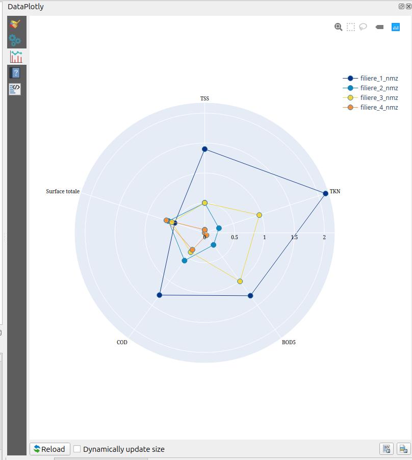
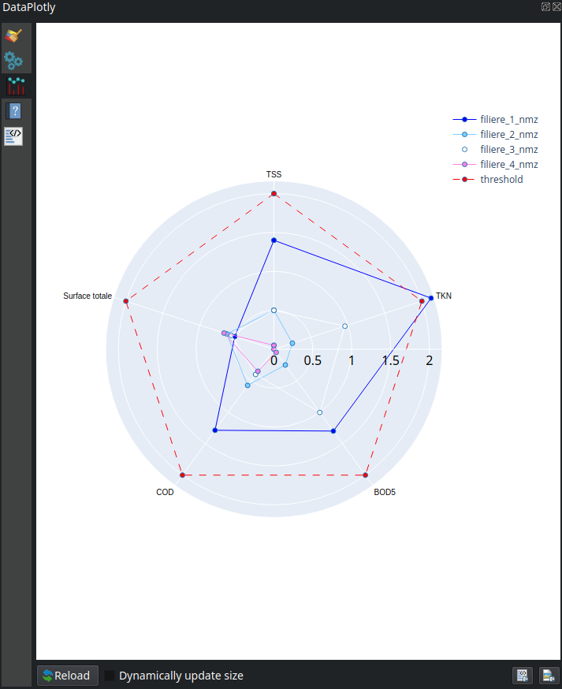

Radar Plot
Here you will find the guide to every parameter of the radar plot. If you need more generic information please see DataPlotly Basic Usage.
This plot does not behave like other DataPlotly plots in the way that each layer feature
will generate an entire trace (not only one point) built with the Y fields values (see below).




radar plot with a threshold enabled (value=2, line type=dash)
Plot Properties
Layer: the combobox will display all the vector layers loaded in QGIS
Y label: the field that will be the label for each radar branch
Y fields: the fields that will be the radar plot branches
Legend title: the title of the legend
Marker size: the size of the marker
Marker type: choose between Points, Lines or Points and Lines
Fill: choose if the radar polygons are filled or not
Threshold: choose to add a constant value line in the plot
Threshold line type: if Marker type is Lines or Points and Lines, the line type for the Threshold line
Threshold value: the constant value for the threshold
Point Type or Line Type depending on the Marker Type chosen
Color scale: if Marker type is Lines or Points and Lines, the color scale for the lines
Opacity: transparency level of all the points/lines
Plot Customizations
Show Legend: show the legend of the current plot
Plot Title: the plot title
Title font: the title font
X ticks font: the font along the value axis
Y label font: the font of the branches labels